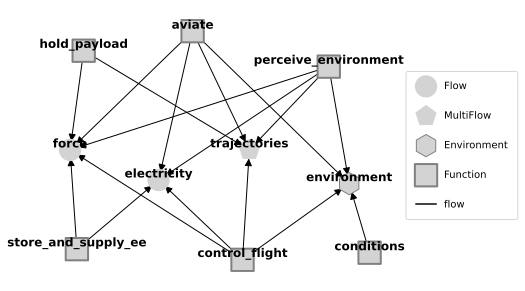
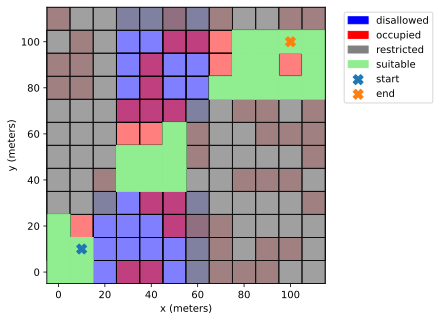
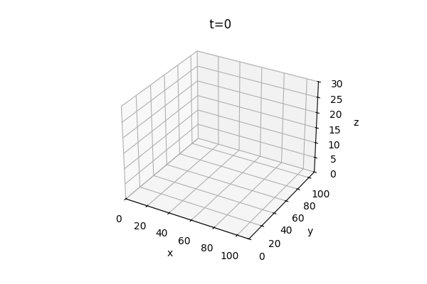
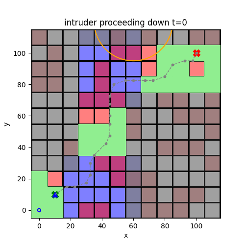
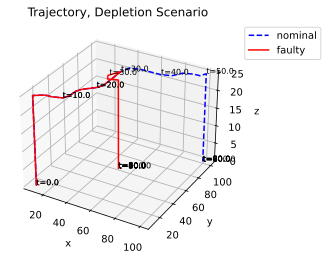
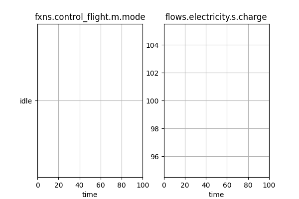
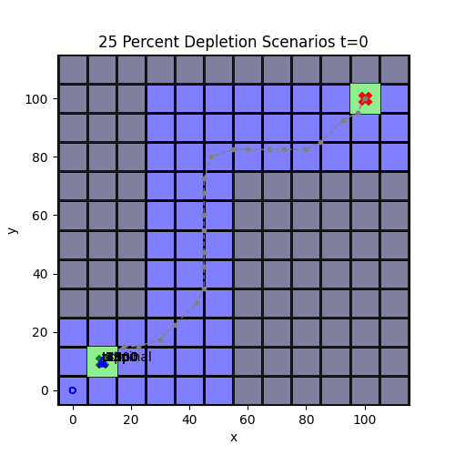

Drone Contingency Management Model Overview:
Modelling drone contingency actions in a shared airspace
What are we trying to do?
Resilience models help us understand how well a system will mitigate hazardous scenarios. In this case, we want to:
Evaluate the ability of proximity to threat functionality to enable safe operations in drones
Identify backup/redundant battery storage requirements to mitigate battery depletion faults
Better understand how a given mission or Concept of Operations can affect resilience(s)
To do this, we adapt the base airspacelib library build with fmdtools to represent drone behavior, and its interactions with its environment in the relevant scenarios.
Setup: Model Structure

aviate: movement of the drone through the air
Alters true drone trajectory
control_flight: path planning and control
Alters desired drone trajectory
store_and_supply_ee: battery/energy storage
Provides electricity to other functions
perceive_environment: Perception of drone location/environment
Determines perceived trajectory from true
hold_payload: Force balance/structure
conditions: External update of environment
Determines external drone location(s)
Setup: Environment and Mission
Drone’s mission is to fly from lower-left start point to upper-right end point
Flies through area not designated “Restricted” (in gray)
Can land in green “suitable” areas in emergencies
Cannot land in Occupied (red) and Disallowed (blue) areas

Setup: Path planning and reconfiguration
Drone plans path to goal while avoiding restricted airspace and minimizing landing risks
Drone at a constant height
Re-plans when hazardous conditions are identified:
airspace intrusion or low battery

How resilient is the drone to airspace intrusion?
Without proximity to threat functionality, drone may fly into errant intruding drone
Proximity to threat functionality causes a pause in mission as well as mission re-planning
Would the drone still be resilient to airspace intrusion in a different scenario?

If the intruder is easily avoidable, we can plan around it
If not easily avoidable, this can cause issues
No logic for “running away”
May replan into restricted flight area
How resilient is the drone to battery depletion?

When SoC is below a threshold, flies to closest suitable location

How resilient is the drone to battery depletion overall?
. . . . . . .
When there is some battery left, the drone is able to replan
Otherwise, the drone may not make it to a suitable landing spot or may crash
How resilient is the drone to battery depletion overall?
Scenario SoC |
mission complete |
unsuitable site |
disallowed site |
occupied site |
damaged |
crashed |
|---|---|---|---|---|---|---|
0% |
10 |
90 |
40 |
10 |
100 |
100 |
18% |
10 |
40 |
20 |
20 |
0 |
0 |
25% |
10 |
0 |
0 |
0 |
0 |
0 |
Adequate mission recovery at 25% SoC - all suitable landings
More unsuitable landings at 18% SoC (at 15% the drone lands immediately)
At 0% the drone crashes
Would the drone still be resilient in a different mission?

No!, consider the 25% depletion scenarios at right:
Flying over disallowed area
Statistics: 20% mission complete, 40% in disallowed locations
Effectiveness of drone safety features is mission and scenario-dependent
Analysis Conclusions
Important Drone Features:
Proximity to Threat functionality can improve drone resilience to flightplan intrusions
Battery monitoring can also help improve drone resilience to battery faults
Both of these require in-flight environmental risk perception and risk-aware replanning to be used effectively
But, Execution Matters…
Need to have adequate battery redundancy to respond effectively–which may be different depending on the type of mission (are there bail-out points?)
Re-planning to avoid approaching drones is more difficult than static ones
Potential Future Work
A variety of bug fixes and feature improvements
More robust logic for avoiding errant drones
More robust logic for battery depletion path planning
…
Can we use this to determine whether a drone is “safe enough” for a mission of interest
Mission: Start, end location and map
Is the battery adequate?
Can we bail out if another vehicle flies through?
Evaluating other interesting hazardous scenarios
Wind, etc.
Drone Resilience Library Conclusions
Resilience models help us understand dynamic aspects of safety, such as…
Dynamical system behaviors (power draw, flight behavior, etc.) that key system functionality, performance, and safety is ultimately based on
When/where a hazard occurs in a dynamic mission/environmental context
Dynamic resources (e.g., energy storage) the system can leverage to mitigate those faults and their effectiveness
This Drone Library and resulting Contingency Management model was implemented in fmdtools, which provides straightforward interfaces for building, simulating, and analyzing resilience models in Python
Most analyses and visuals used fmdtools constructs (modeling classes, simulation and analysis methods) directly rather than writing custom code
Underlying methodology and code constructs can be adapted to a range of applications (autonomous vehicles, space, etc), not just drones
If you want to make something similar, you don’t have to start from scratch (start with fmdtools!)